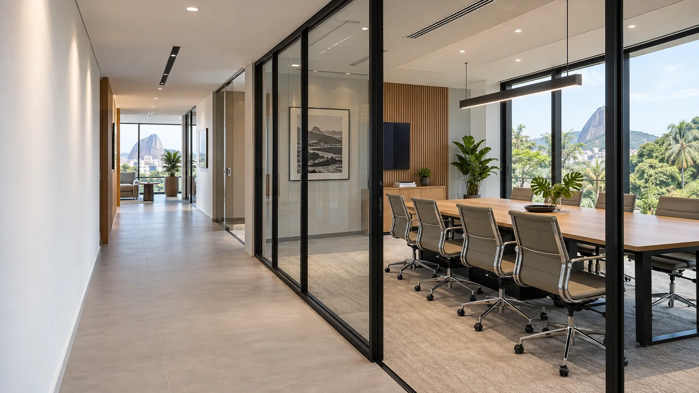
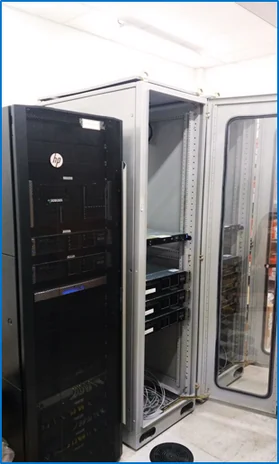
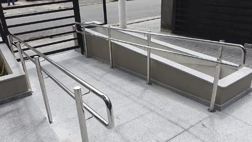
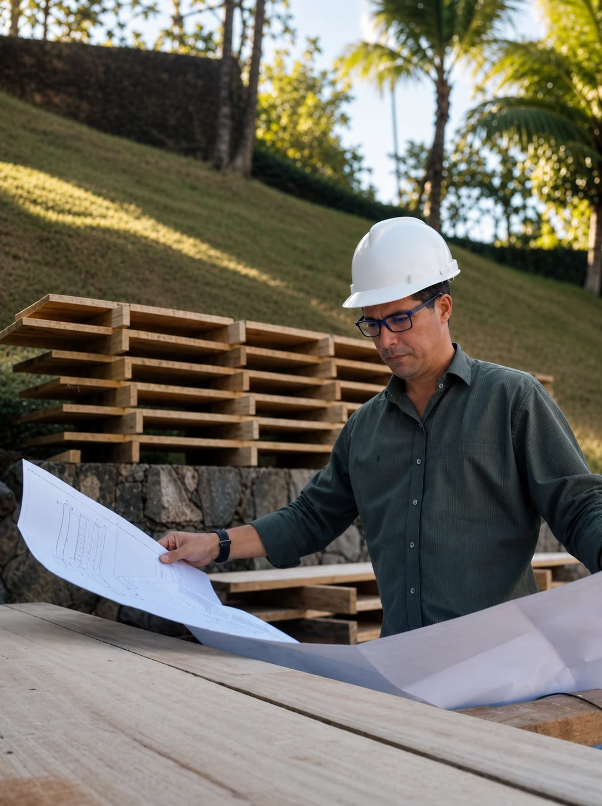

Imagem ilustrativa
Imagem ilustrativa
Reforma corporativa
Salas da CBKC
Centro, Rio de Janeiro

ENGENHARIA CIVIL · RIO DE JANEIRO
Seu espaço, uma nova possibilidade.
Do projeto à obra, com
quem entende.
25 anos de experiênciaEng. Sandro Ferreira · Do projeto à execução
01 / PORTFÓLIO
Imagem ilustrativa
Reforma corporativa
Centro, Rio de Janeiro
 Imagem ilustrativa
Imagem ilustrativa
Construção e ampliação
Área de atuação

Reforço estrutural
Tijuca, Rio de Janeiro

Reforço estrutural
Pechincha, Rio de Janeiro

Reforço estrutural
Duque de Caxias, RJ

Imagem ilustrativaInfraestrutura técnica
Área de atuação

Imagem ilustrativaAcessibilidade e circulação
São Cristóvão, Rio de Janeiro
 Imagem ilustrativa
Imagem ilustrativa
Ampliação de laboratório
Ilha do Fundão, Rio de Janeiro
 Imagem ilustrativa
Imagem ilustrativa
Coordenação e gerenciamento
Glória, Rio de Janeiro
02 / O QUE FAZEMOS
EXPERIÊNCIA NA PRÁTICA
Trabalhos realizados diretamente
ou em parceria com empresas
de engenharia.



03 / QUEM ESTÁ À FRENTE
À frente da Ferreira, Sandro acompanha as decisões do projeto à execução. Você conversa com quem conhece a sua obra.
Já construímos algo juntos?Sua experiência também faz parte da nossa história.
SEU PRÓXIMO PROJETO
Conte o que você tem em mente.
A conversa começa por aqui.